웹과 앱을 개발하며 사용자의 요청이 서버와 데이터를 거쳐 결과로 전달되는 과정에 관심을 가져왔습니다. 일정 관리 앱과 쇼핑몰을 통해 외부 서비스 연동과 배포 경험을 쌓았으며 가전 고장 상담 서비스에서는 팀장으로 서비스 설계와 AI 상담 개발을 맡아 필요한 정보를 근거에 맞게 제공하는 구조를 고민했습니다.
Technical skills
Backend / Data
AI integration
Client / Operations
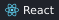
Collaboration / Tools
Education
LG전자 AX School 1기
2026.07 - 2026.12 수료 예정 AI 애플리케이션 개발자 과정 · 960시간 Python·DB·ML/DL·LLM API 및 팀 프로젝트
가전 A/S에서 수리비와 보증 조건을 미리 알기 어렵다는 문제가 반복되어 수리 전 판단을 돕고자 만들었습니다. 세탁기와 건조기 그리고 냉장고와 식기세척기의 증상과 오류코드를 입력하면 제조사 자료를 바탕으로 자가점검과 보증기간 및 참고 수리비를 안내하는 AI 상담 웹 서비스입니다. 상담 결과와 함께 공식 A/S 접수 경로를 제공합니다.
SONG JAEWON / DEVELOPER PORTFOLIO01 / SERVICE DEMO
TEAM PROJECT · USER FLOW
HomeCare AI
실제 화면으로 보는 상담 흐름
시연 영상에서 발췌한 6개 화면 · 제품 등록부터 공식 A/S 안내까지
냉장고의 증상을 입력한 뒤 자가점검과 추가 질문을 거쳐 보증과 참고 수리비 및 공식 A/S 접수 경로를 확인하는 과정입니다.
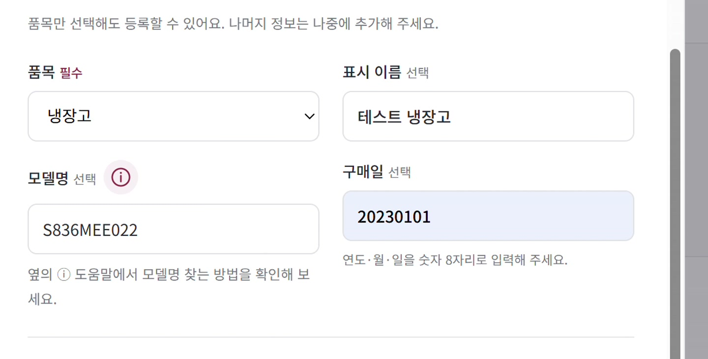
01. 제품 등록품목·모델명·구매일을 등록
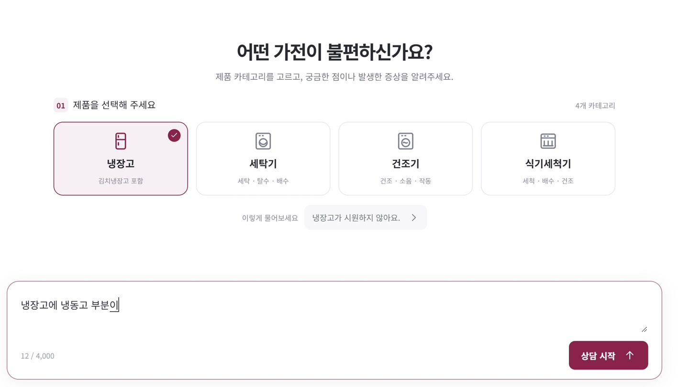
02. 제품 선택과 증상 입력상담할 품목을 선택하고 증상을 설명
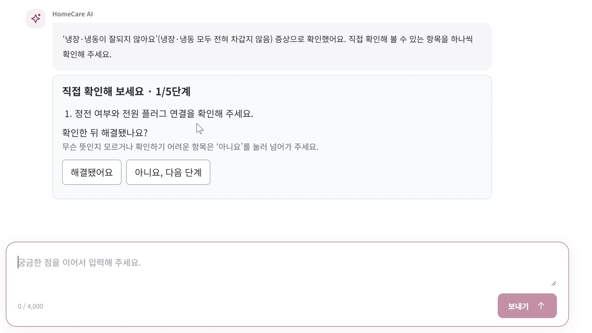
03. 자가점검 카드제조사 근거를 바탕으로 확인 항목 제시
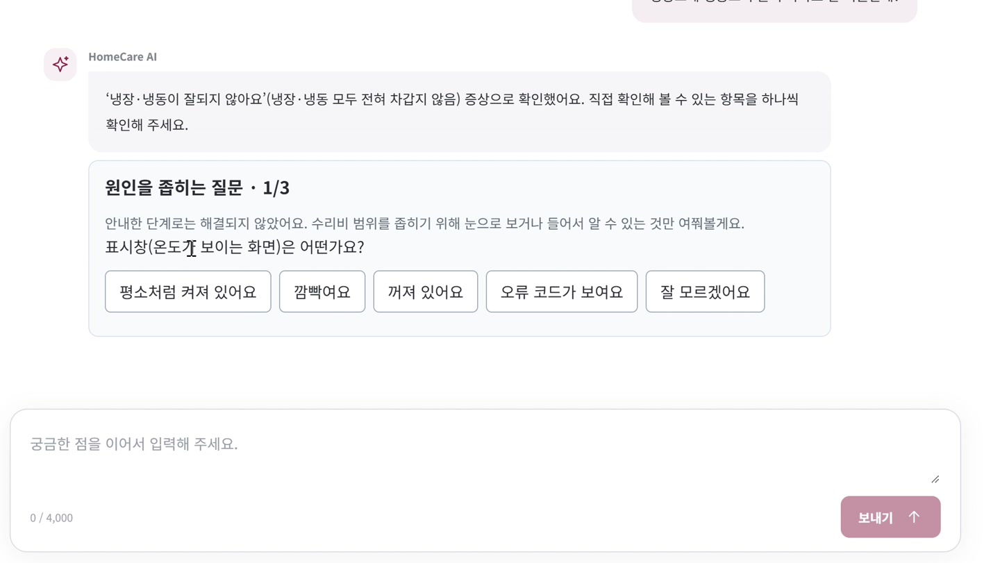
04. 추가 질문관찰 결과를 선택해 원인 범위를 축소
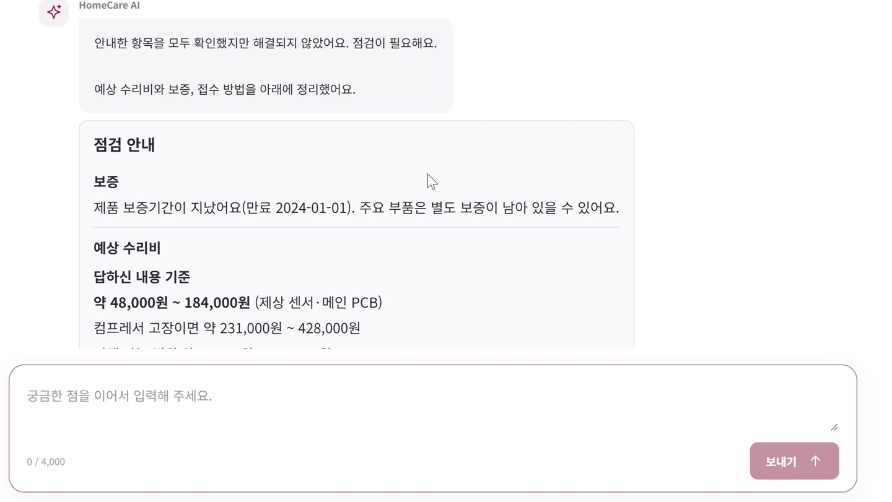
05. 보증·참고 수리비구매일 기준 보증과 비용 범위를 안내
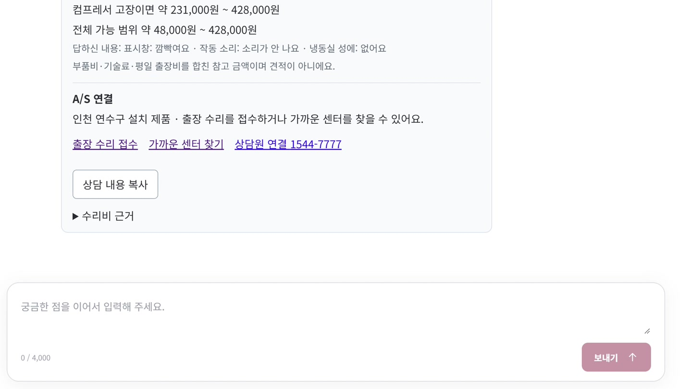
06. 공식 A/S 연결접수·센터·상담 경로와 요약을 제공
실제 서비스 시연 화면입니다. 예상 수리비는 확정 견적이 아닌 참고 범위로 안내하며 무상 적용 여부는 별도 조건 확인이 필요합니다.
SONG JAEWON / DEVELOPER PORTFOLIO01 / IMPLEMENTATION
TEAM PROJECT · ENGINEERING
HomeCare AI
근거 검색과 서버 검증을 연결한 상담 구조
핵심 구현 · 제조사 자료 검색 / MCP 연결 / 상담 상태 관리
01. Spring AI로 제품별 제조사 근거 검색
다른 모델의 조치를 안내하면 잘못된 점검으로 이어질 수 있어 검색 전 제품의 적용 조건을 확인해야 했습니다. Spring AI 검색에 품목·모델 조건을 적용하고 검색용 텍스트와 표시 원문을 분리해 제품별 근거를 반환하여 사용자에게 보다 정확한 정보를 제공했습니다.
FILTER적용 조건 확인
품목·모델 제외 조건 검증
RETRIEVE후보 검색
오류코드·증상 어휘 임베딩 유사도 결합
FALLBACK장애 대응
의미 검색 장애 시 어휘 검색으로 전환
RESPOND근거 부족 처리
추가 확인 또는 자료 부족 안내
02. Spring AI와 FastMCP로 조회 도구 9개 연결
일반 문의는 AI가 도구를 고르고 비용·접수 문의와 등록 제품 증상 상담은 서버 정책이 호출합니다. 소유권·상태 검사와 보증 및 비용 판단은 Spring 도구 API가 맡도록 역할을 나눴습니다.
SONG JAEWON / DEVELOPER PORTFOLIO01 / IMPLEMENTATION
TEAM PROJECT · ENGINEERING
HomeCare AI
03. 서버 검증으로 상담 상태와 안내 조건 보호
상태 전환
상담 화면에 남아 있는 지난 카드를 뒤늦게 눌러도 현재 상담 내용이 바뀌지 않도록, 답변이 들어올 때마다 본인의 제품인지, 지금 단계의 카드가 맞는지, 그사이 상담 내용이 바뀌지 않았는지를 확인했습니다. 또한 오래된 카드와 중복 제출은 409로 거부하고 정상 제출은 기존과 같은 최종 상태로 종료했습니다.
수정 전 · 테스트 버전
① 다른 화면에서 다음 단계로 진행 · 서버는 2/5단계
② 이전 화면의 1/5단계 카드에서 ‘해결됐어요’ 제출
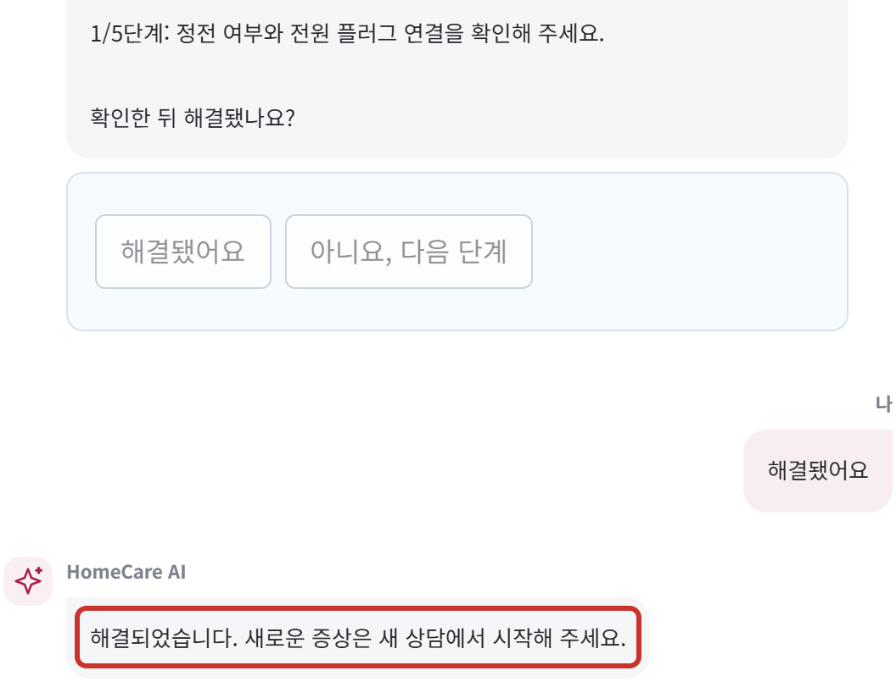
이전 1/5단계 응답으로 상담 종료 · 저장 메시지 6 → 8건
→
수정 후 · 최종 버전
① 다른 화면에서 결과를 먼저 제출 · 점검 필요로 저장
② 이전 화면의 1/5단계 카드에서 ‘해결됐어요’ 제출
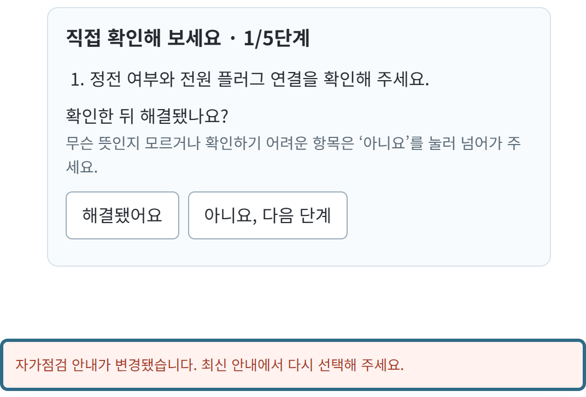
409로 거부, 상담 상태 유지 · 저장 메시지 6 → 6건
보증·비용 안내
입력 경로 없이 null인 구입 증빙·가정용 사용 값이 만료일 계산 조건이라 UNKNOWN(‘추가 확인 필요’)을 반환했습니다. 만료일은 구매일과 정책 기간으로 계산하도록 바꾸고, 두 값은 실제 무상 적용을 판정할 때만 사용하도록 분리했습니다. 무상 여부는 점검 때 확정한다고 안내하고, 금액이 없던 비용 항목 대신 참고 수리비와 공식 접수 경로를 반환했습니다.
수정 전 · 테스트 버전
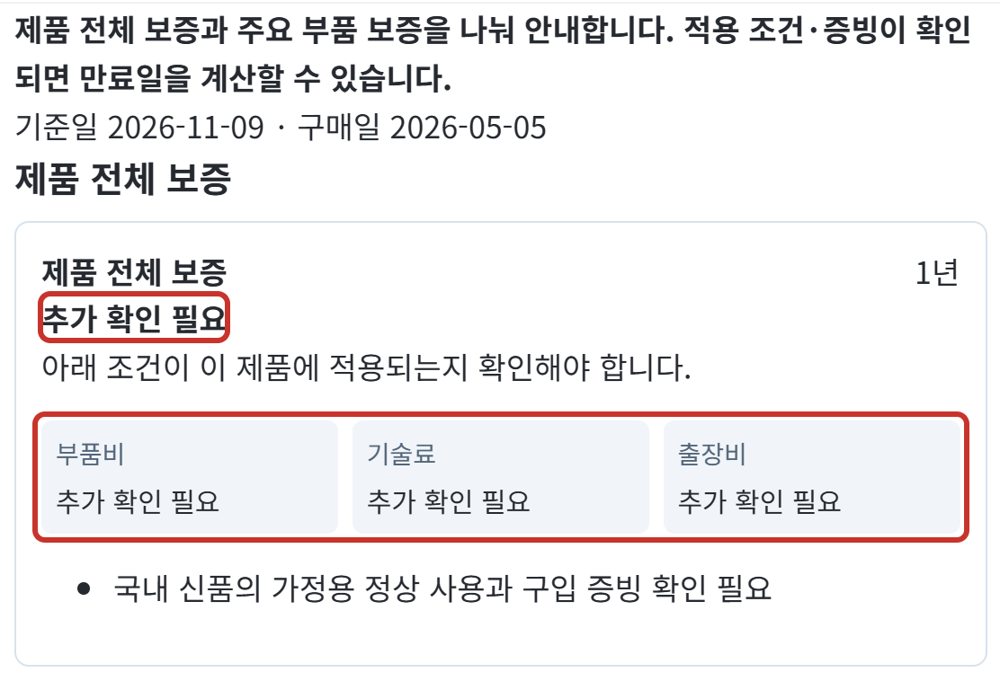
구매일이 있어도 보증 상태와 비용 항목이 모두 ‘추가 확인 필요’
→
수정 후 · 최종 버전
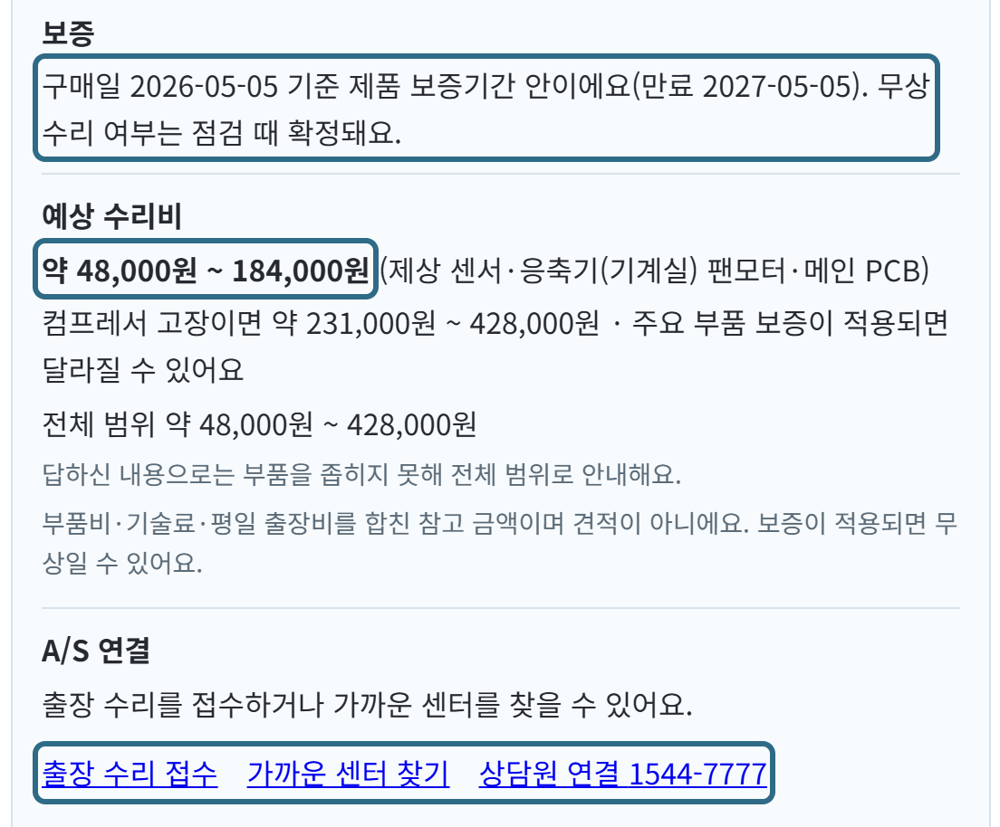
보증기간·만료일, 예상 수리비, 공식 접수 경로를 한 카드로 안내
SONG JAEWON / DEVELOPER PORTFOLIO01 / VALIDATION
TEAM PROJECT · IMPROVEMENT
HomeCare AI
답변의 근거를 고정하고 불필요한 요청을 축소
2026.10.14 - 10.15 개발 평가 / 2026.10.30 최적화 검수 기록 기준
주요 개선 및 검증
문서 임베딩 인덱스 재사용
25 → 0 회 요청
자료·모델 설정의 SHA-256 지문을 비교 재시작 시 유효한 캐시로 인덱스를 복원 자료 1542건의 문서 재임베딩을 생략
검증된 자료로 답변 작성
4/14 → 14/14 개 통과
동일 14문항의 답변 구성 평가 AI는 근거 ID 선택 서버는 원문 복원 고정 대체 응답은 성공에서 제외
자가점검 단계 제출
80% 감소
5단계 진행 예의 결과 제출 요청 5회 → 1회 중간 단계는 화면에서 처리 소유권·단계·버전 검증 유지
캐시는 자료 1542건과 모델 설정이 같고 유효한 재시작 기준입니다. 문서 재임베딩 요청만 비교하며 질문 임베딩은 별도입니다. 자가점검 수치는 최초 카드 수신과 최종 결과 처리 이후의 별도 상담을 제외한 단계 제출 흐름 기준입니다.
개선 1. 근거 ID 선택과 서버 검증으로 원문 보존
문제 : 금액과 조치 내용이 바뀌면 사용자의 수리 판단에 영향을 줄 수 있어 근거 원문을 정확히 전달해야 했습니다.
BEFOREAI가 근거 본문을 직접 작성·인용
→
AFTER근거 ID 선택 → 검증 → 본문 복원
판단·구현 : AI는 근거 ID만 선택하게 하고 서버에서 ID와 필수 근거의 누락 및 중복을 검증하도록 했습니다. 검증을 통과한 원문만 복원하고 실패하면 고정 안내를 제공해 새 금액이나 조치가 나가지 않도록 구성했습니다.
검증·결과 : 동일 14문항의 답변 구성 평가에서 통과 문항이 4개에서 14개로 늘었습니다. 고정 대체 응답은 제외했습니다.
개선 2. React 화면 처리와 서버 검증으로 단계 제출 통합
문제 : 단계마다 채팅과 이력 조회가 반복돼 빠른 진행 시 요청 제한에 걸릴 수 있었으며 최종 상태는 유지해야 했습니다.
BEFORE · 같은 5단계 진행단계별 결과 제출 5회
→
AFTER최종 결과 제출 1회
판단·구현 : 중간 단계는 React에서 처리하고 결과만 제출했습니다. 서버의 소유권과 단계 및 버전 검증은 유지했습니다.
검증·결과 : 5단계 제출 요청을 5회에서 1회로 줄이고 동일한 최종 상태와 오래된 카드·중복 제출의 409 거부를 확인했습니다.
범위·한계 : 최초 카드 수신과 이후 별도 상담은 제외했습니다. 새로고침 시 중간 단계 복원은 추가 개선이 필요합니다.
평가 범위와 남은 과제
평가
이전 → 개선 후
범위
자연어 해석
36/38 → 38/38
동일 38개 입력의 의도·증상·후속 응답
실제 모델 상담
22/24 → 24/24
H2·HTTP·JWT·FastMCP 연동 / 46턴
추가 표현 검사
4/6 → 5/6
수정 후 재검사 / 미통과 1건 개선 과제
gpt-4o-mini를 사용한 개발 세트 재검사입니다. 독립 정확도나 실제 수리 성공률을 의미하지 않으며 이후 변경된 최신 코드 전체의 재평가 결과도 아닙니다.
다음 과제: 독립 질문의 답변 적합성 실제 수리 사례의 비용 범위 운영 지연·실패율과 사용자 과업 평가
SONG JAEWON / DEVELOPER PORTFOLIO02 / OVERVIEW
PERSONAL PROJECT · PRODUCT
DaySync
하루를 시작할 때 필요한 정보를 한곳에서
2025.03 - 11 · 캡스톤 프로젝트 · 1인 개발
여러 앱에 흩어진 일정과 교통 및 날씨 정보를 한곳에 모아 하루의 준비를 돕는 Android 앱입니다. 이동 경로와 날씨를 확인하고 자연어로 일정과 알람을 등록할 수 있습니다.
실제 앱 화면
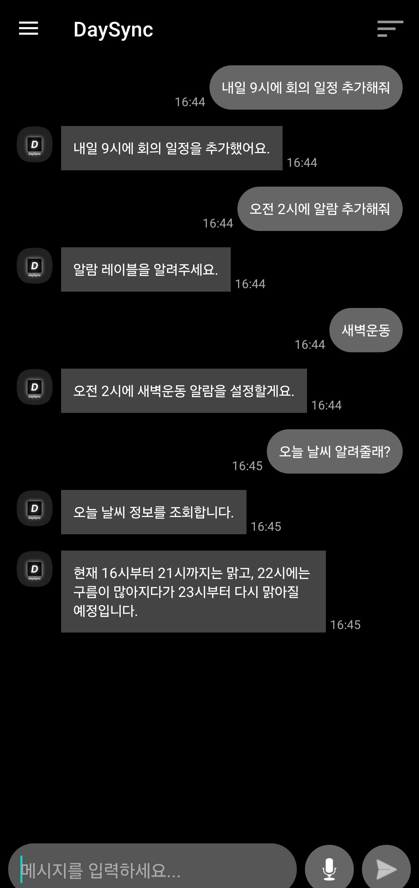
AI 채팅
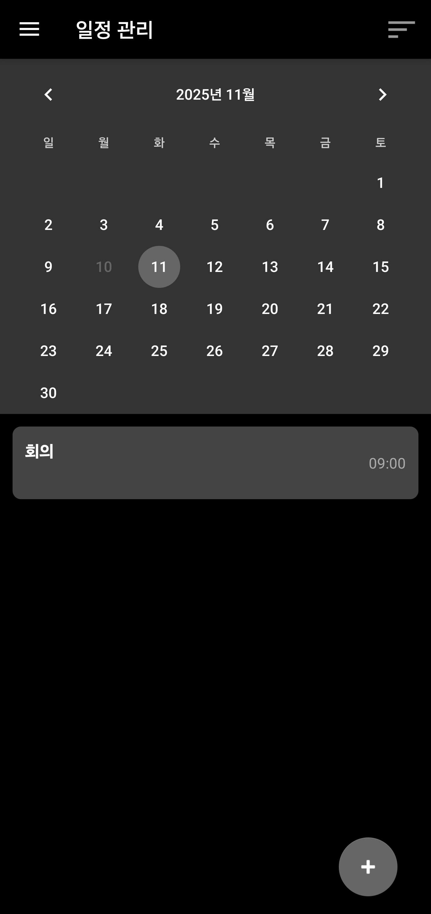
일정 관리
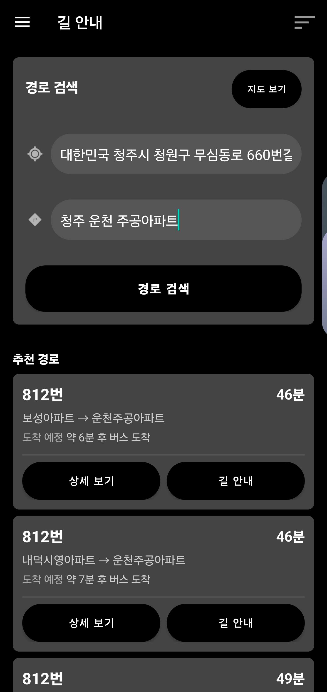
경로·버스
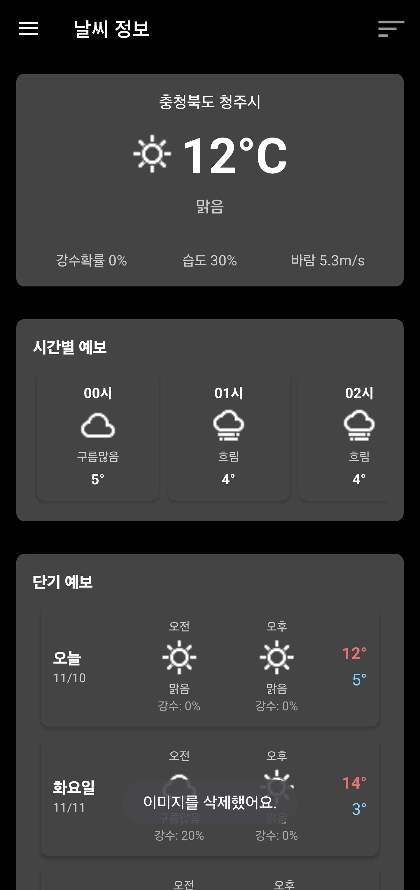
날씨 정보
문제 해결을 위한 주요 기능
Function Calling으로 일정·알람 등록
제목과 시간이 빠진 요청의 저장을 막고자 Function Calling 추출값을 FastAPI로 검증해 필수값을 갖춘 요청만 저장하도록 했습니다.
지도·교통·날씨 API 통합
여러 앱을 오가던 불편을 줄이고자 지도와 교통 및 날씨 API를 Android 앱에 연동했습니다. 일정과 이동 정보를 한곳에서 확인할 수 있습니다.
담당 범위
설계
클라이언트·서버 구조 시스템 아키텍처와 기능별 시퀀스 정리
서버
FastAPI REST API 구현 외부 서비스 연동과 에러 핸들링
앱·배포
Android(Java) 앱 구현 REST API 연동과 AWS EC2 서버 배포
핵심 경험: Android 앱과 FastAPI 서버를 1인 개발하고 AWS에 배포하며 자연어 입력과 외부 API의 오류 처리 경계를 구성했습니다.